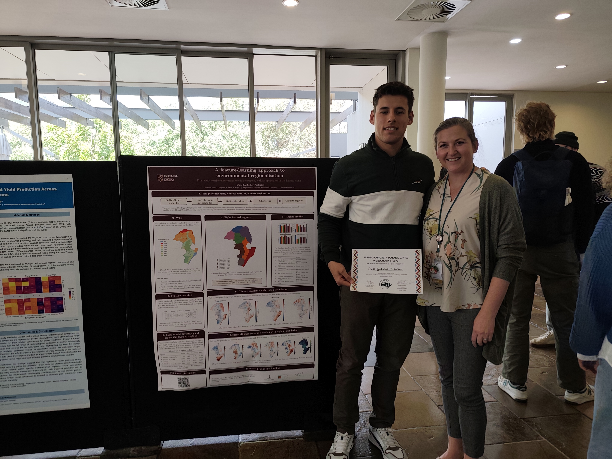

Master of Commerce thesis, Operations Research
Deep Representation Learning for Environmental Regionalisation
Environmental regions underpin land-use planning, conservation and forestry deployment decisions, yet the regions in use are drawn either by hand or from fixed temperature and rainfall thresholds. This study learns regions directly from 19 years of daily environmental records instead, and tests whether the learned regions describe the landscape better than the rule-based classification they would replace.
About the researcher
Chris Laubscher-Pretorius
Chris conducted this research as part of a Master of Commerce in Operations Research at Stellenbosch University. His thesis investigates how deep representation learning can extract structure from long environmental time series and support interpretable environmental regionalisation.

What this site contains
This site accompanies the written thesis as electronic supplementary material. It is not a substitute for the document. The thesis contains the principal methods, results and conclusions, while this site provides interactive diagrams and extended technical material.
Machine-learning guide
Extended explanations of representation learning, neural networks, autoencoders, self-organising maps, variational autoencoders and deep embedded clustering, including the tutorial figures removed from the written appendix.
Architecture search, animated
Every configuration evaluated during the architecture search, animated layer by layer, with the tensor shapes and receptive fields computed from the convolution arithmetic.
Complete architecture results
Candidate definitions and validation tables for every stage of the deterministic and variational architecture search.
Autoencoder manifold geometry
Extended background on the manifold hypothesis, decoder-induced distance, the Riemannian pullback metric and the sampled geodesic calculation used to verify latent Euclidean distance.
Feature distributions by region
Complete violin-plot distributions of all 33 climate features under the eight Köppen-Geiger classes and eight feature-learning regions, grouped into temperature, precipitation, humidity and wind.
The problem
Environmental regionalisation groups locations that behave similarly, and the resulting regions inform where a species is planted, what is conserved and how land is allocated. The classifications in general use, such as the Koppen-Geiger system, are built from fixed thresholds on a small number of summary variables. Fixed thresholds place sharp boundaries through areas that vary gradually, and summary variables discard the daily behaviour that distinguishes one site from another, so a region defined this way explains little about why it formed or where its edge belongs.
The methodological question is how deep representation learning can transform multivariate spatiotemporal environmental data into an interpretable representation from which spatially coherent environmental regions can be constructed.
The data
Three north-eastern provinces of South Africa, sampled on a hexagonal lattice at five kilometre spacing, with a complete daily record for every site.
The six variables are maximum and minimum temperature, maximum and minimum relative humidity, wind speed and precipitation. Temperature comes from CHIRTS-ERA5 and precipitation from CHIRPS, both at roughly five kilometres, while humidity and wind come from the University of the Witwatersrand Global Change Institute portal at roughly eight kilometres. Elevation was deliberately withheld from training and kept aside as an independent check, so any elevation structure in the learned regions had to be inferred from climate alone.
The approach
A general four-stage framework, instantiated here on daily climate data.
1. Prepare
Split the sites, transform the skewed channels and scale the six variables, without ever fitting a statistic on data outside the training partition.
2. Represent
Train a convolutional autoencoder that compresses each site from 6 by 6,935 values to a five-dimensional vector.
3. Evaluate
Check what the embedding retained, refine the model where the check fails, and feed the result back into stage two.
4. Apply
Cluster the embedding into regions, compare against the rule-based classification, and test the regions on a forestry question.
Headline results
The selected model generalised
The chosen autoencoder pairs three strided layers with four dilated layers, reaching a receptive field of 763 days so a single convolutional feature spans more than two annual cycles. On the held-out test sites the channel-mean fraction of variance unexplained was 0.0692, against 0.0685 on validation and 0.0672 on training. The closeness of those three figures is the evidence that the representation transfers to sites the model never saw.
| Variable | Training | Validation | Test |
|---|---|---|---|
| Maximum temperature | 0.0119 | 0.0120 | 0.0120 |
| Minimum temperature | 0.0166 | 0.0169 | 0.0167 |
| Maximum relative humidity | 0.0159 | 0.0161 | 0.0160 |
| Minimum relative humidity | 0.0277 | 0.0277 | 0.0287 |
| Wind speed | 0.0991 | 0.1031 | 0.1054 |
| Precipitation | 0.2320 | 0.2353 | 0.2364 |
| Channel mean | 0.0672 | 0.0685 | 0.0692 |
Fraction of variance unexplained, where zero is perfect reconstruction. Precipitation is the hardest channel because rain falls on roughly 16 per cent of days, so the series is mostly zero with occasional large values.
The learned regions disagree with the rule-based ones, and describe elevation better
Elevation was never given to the model, so recovering elevation structure more sharply than a classification built on temperature and rainfall thresholds indicates that the embedding captured terrain-driven climate behaviour from the daily series alone.
Using the material
The architecture pages show how the time axis contracts and how dilated kernels expand the receptive field. The geometry page contains the extended derivation and geodesic pseudocode referenced by the thesis. The feature-distribution page contains the complete comparison of all 33 climate features. The overview summarises the research and principal results.
Open the architecture pages or open the geometry page, or view the feature distributions.